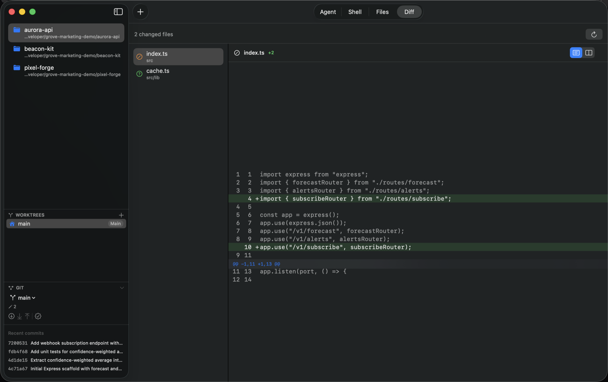
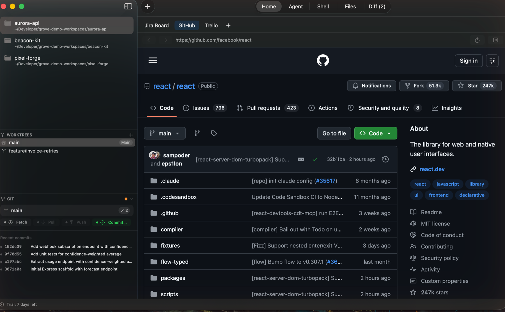
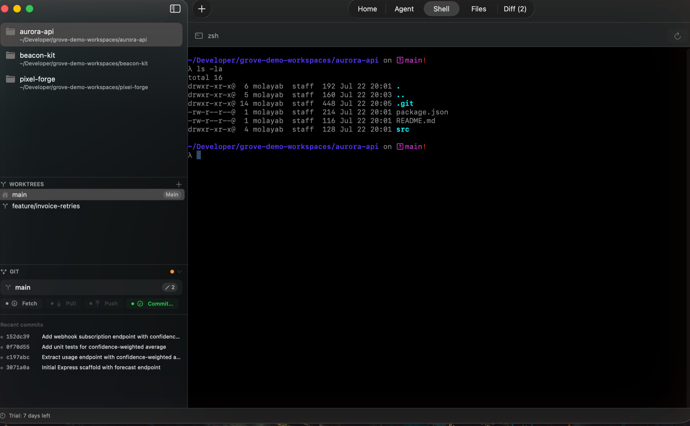
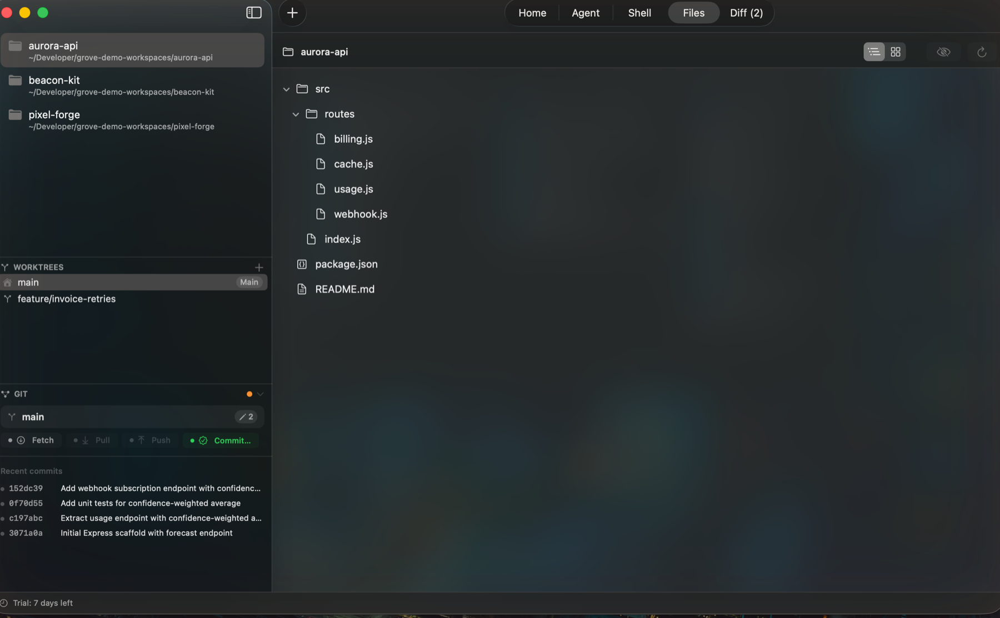
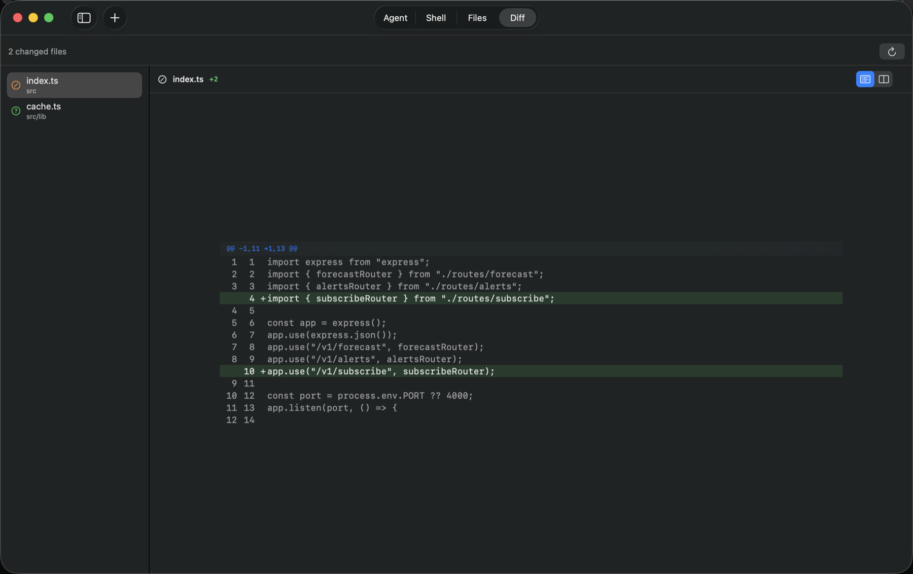
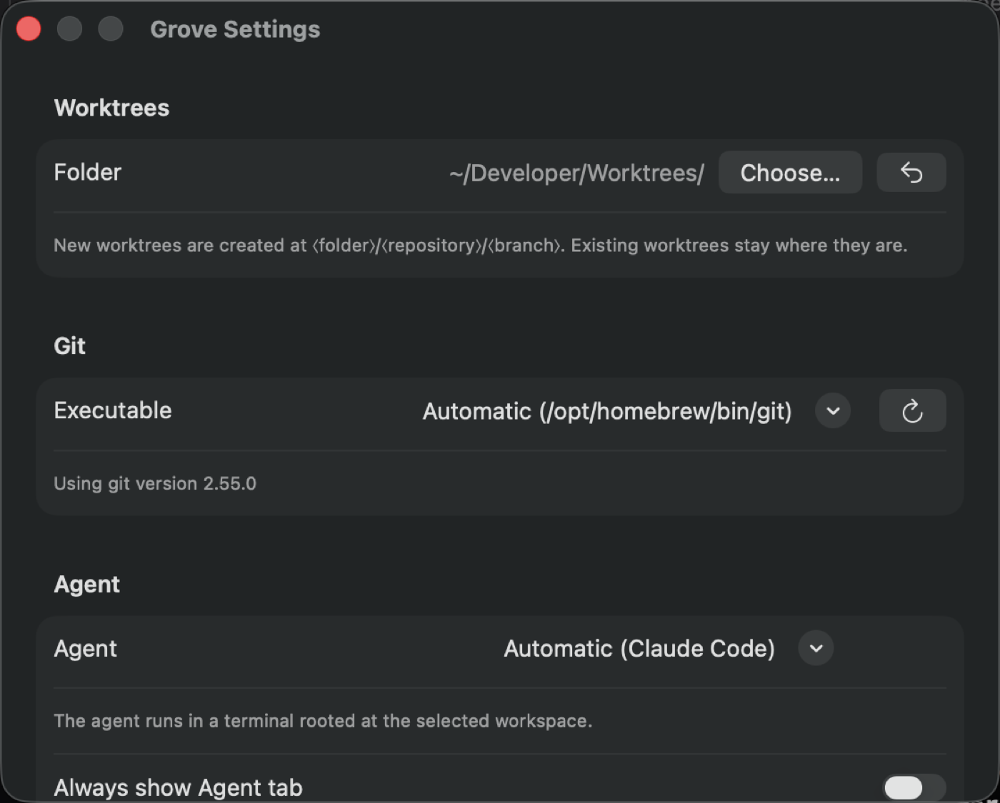

Firmado ad-hoc mientras se completa la notarización — clic derecho → Abrir la primera vez.
Todos los releases en GitHub →Agentes de IA, git, una shell real y diffs — todo en el mismo checkout, sin cambiar de app.
Gratis durante la vista previa · firmado ad-hoc mientras se completa la notarización

Descarga
Una versión de prueba completa, servida directamente desde el último release de GitHub — sin cuenta, sin correo electrónico.
Firmado ad-hoc mientras se completa la notarización — clic derecho → Abrir la primera vez.
Todos los releases en GitHub →Funciones
Nada de Electron. Nada de suscripciones. Solo una app nativa rápida y enfocada.
Trae tu propio agente de IA — Claude Code, opencode, Codex, Gemini CLI o Aider — y simplemente funciona, ya apuntado a la carpeta correcta. Sin configurar el PATH, sin una ventana de terminal aparte que vigilar.
Trabaja en tres ramas a la vez sin perder tu lugar. Cada worktree tiene su propio agente, shell, archivos y diff — haz clic en un worktree y todo lo sigue, automáticamente.
Haz el trabajo de git de todos los días sin salir de la ventana. Cambia de rama, haz fetch, pull, push y commit — más un historial de commits recientes para saber siempre dónde lo dejaste.
Explora tu proyecto a tu manera — en árbol o en cuadrícula de iconos — y ve exactamente qué cambió, unificado o lado a lado, antes de comprometerte a nada.
¿Necesitas una terminal real? Está ahí mismo, en la misma carpeta que tu agente — ejecuta una prueba, revisa un log, copia una ruta, sin cambiar de contexto.
Grove no deja que un clic accidental borre tu trabajo. Force push, eliminar ramas y descartar cambios no están aquí — y todo lo que sale de tu máquina pide confirmación antes.
Cambia a otro proyecto y este sigue corriendo — su agente y su shell siguen en segundo plano aunque no lo estés mirando. Revisa uno sin pausar el otro, y vuelve exactamente a la pestaña donde lo dejaste.
Capturas
El mismo checkout, cinco formas de trabajar en él.

Ancla tu tablero de Jira, repositorio de GitHub o tablero de Trello — a un clic, sin salir del espacio de trabajo.

Una shell real, ubicada en el mismo checkout exacto que tu agente.

Un árbol de archivos expandible, o una cuadrícula de iconos — tú decides en Configuración.

Unificado o lado a lado — los diffs se muestran como prefieras, por archivo.

Todo viene configurado automáticamente — carpeta raíz de worktrees, binario de git, agente, shell.
¿Por qué nativo?
~/.local/bin, ~/.bun/bin — incluso al abrir Grove desde el Dock, no solo desde la terminal.
Agentes compatibles
Grove encuentra el binario del agente automáticamente — no necesitas configurar el PATH.
Precios
Compra única. Todas las actualizaciones futuras incluidas. Elige el número de licencias según cuántos Macs uses.
Pago seguro a través de Gumroad · Gratis para descargar y probar — compra una licencia cuando termine tu prueba